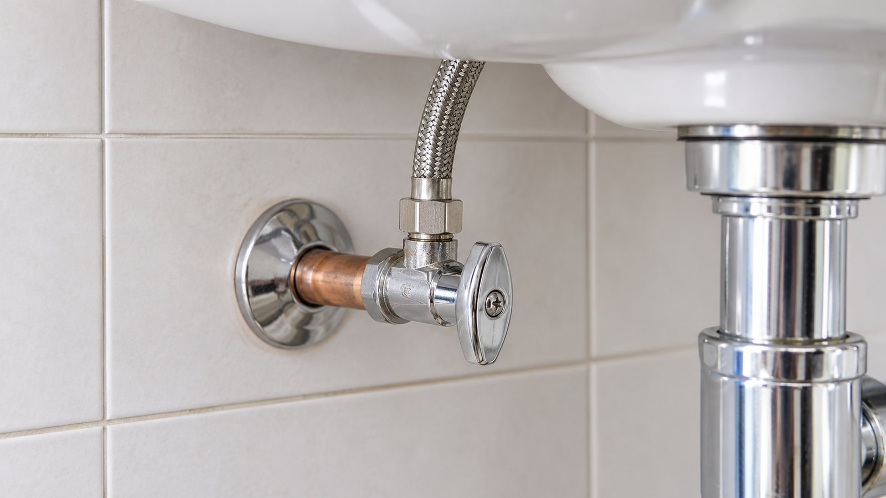
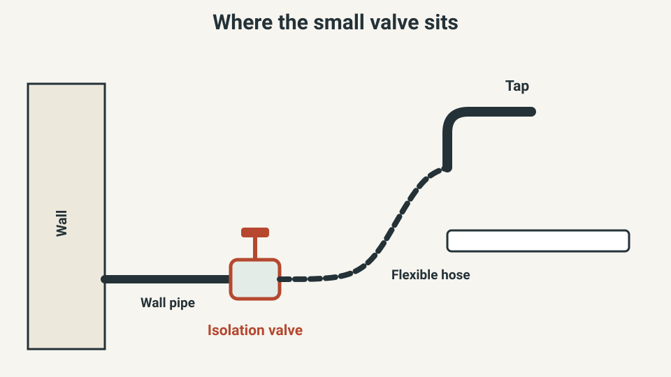
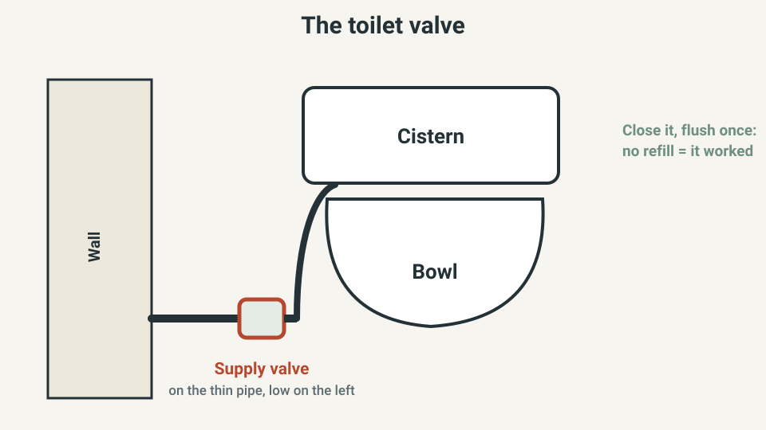
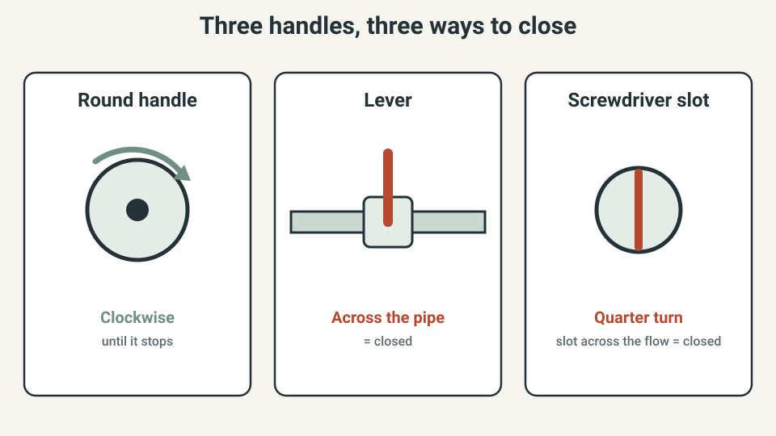

WEEKEND PROJECTS · WATER LEAKS
How to Shut Off Water to a Toilet, Sink or Washing Machine

A dripping toilet or a hose that has split does not need the whole house switched off. Most fixtures have a small valve of their own, and closing it takes seconds. This guide shows where to find it, which way to turn it, how to check it worked and what to do if it is stuck or missing. It covers US and UK homes. For the valve on the pipe entering the house, see our main shutoff guide. I am not a plumber.
The quick answer
Close the small valve nearest the problem first, and use the main shutoff only when that valve is missing or will not move.
- Find the small valve on the pipe feeding the fixture. For a toilet it is usually at the bottom left, on the thin pipe.
- Close it. Round handle: clockwise until it stops. Lever: a quarter turn so it sits across the pipe. Slotted valve: a quarter turn with a screwdriver.
- Check it worked. A toilet should not refill after a flush, and a tap should stop running.
- Do not force a stiff valve. Shut the main supply instead.
- Test your small valves once a year, before you need them.
Quick plan
| Item | Detail |
|---|---|
| Time | Angi says about 5 minutes |
| Cost | Angi says $0 for the shutoff itself. Replacing a fixture valve is about $50 to $150, per Angi |
| Best for | Leaks and repairs at one toilet, tap, basin or machine |
| Goal | Stop the water at the fixture and keep the rest of the house running |
Where the isolation valve sits
The small valve has two names. In the US it is often called a fixture shutoff valve or supply stop. In the UK it is an isolating valve or isolation valve. It sits on the pipe between the wall (or floor) and the fixture, and it stops the water to that one item.

Southampton City Council says that in a kitchen or bathroom fitted in the last 10 to 15 years you will normally find a chrome isolating valve on the pipework to every tap, shower, washing machine, and the ball valve of a toilet cistern. Which? Trusted Traders says it is good practice for every water-using appliance or fixture to have one. Angi says a toilet valve is usually on the thin pipe at the bottom left of the toilet, round or lever shaped, and that older or non-standard plumbing may not have one.
The toilet valve

Angi says the toilet valve is a single mechanism, because toilets only use cold water. It is on a pipe about half an inch across. Which? adds that the valve is close to the cistern inlet and can be closed with a screwdriver or a finger-turn fastening.
Close it, then flush. Angi says the toilet should not refill if the water is off. If the cistern fills as before, the valve has not closed or you have the wrong one.
Sinks, basins and taps
Look under the sink, behind a pedestal basin or in the cupboard beneath. A mixer tap fed by hot and cold usually has two valves, one for each pipe. That is my observation, not from the sources. Southampton City Council says there is an isolating valve on the pipework to every tap in a modern fit-out.
If a tap drips or you are changing a washer or a cartridge, close both. American Water says to turn off the fixture's shutoff valve before changing a washer, clockwise until tight, and then check that the water has stopped.
Washing machines and dishwashers
Southampton City Council says washing machine valves have a blue or red lever, and a quarter turn isolates that supply. Blue and red usually mark cold and hot, but check your own machine. The lever sitting across the pipe means closed, as Which? says of any lever valve.
A dishwasher is often fed the same way, with a small valve under the sink or beside it. That is my note, not from the sources. If you cannot see a valve, look for the supply hose and follow it back.
Closing it: round handle, lever or screwdriver slot

| Handle | How to close it | Source |
|---|---|---|
| Round handle | Turn it gently clockwise until it will not turn further | Angi, Which? Trusted Traders |
| Lever | Push it from in line with the pipe to across the pipe, a quarter turn | Angi, Which?, Southampton City Council |
| Screwdriver slot | Turn the slot a quarter turn so it shows across the flow | Southampton City Council |
Angi notes that some valves have an arrow on them, and Which? says these arrows may help. Turn slowly, with your hand or a screwdriver and no wrench. Never use a wrench or pliers on a small valve. That last point is my advice.
Check that it worked
- Toilet: flush once. It should not refill, per Angi.
- Tap or basin: open the tap. The flow should drop to a trickle and stop.
- Washing machine: run the empty drum on a cold fill for a moment and see that no water comes in. That is my suggestion.
- Look for drips at the valve and the hose. If it still leaks, close the main shutoff.
If the valve is stiff, leaks or is missing
- Stiff. Southampton City Council says do not force it; turn the water off at the incoming stopcock or the meter box instead. Angi says a stiff valve can be loosened with a lubricant. I would try that gently and stop if it will not move.
- Missing. Southampton City Council says older homes may not have isolating valves, so use the incoming stopcock. See our main shutoff guide. Which? suggests asking a plumber to fit more valves.
- Leaking at the valve. Close the main supply and call a plumber. I did not find a source I trust for repairing a leaking valve at home.
- Replacing one. Angi says it may be a DIY job for the confident, and recommends a plumber if you are unsure.
Turn the water back on
Reverse the steps. Open the valve slowly, then watch the connections for drips for a minute or two. That is my advice. If you also closed the main shutoff, open that last, and open a tap to let any air out of the pipes.
Test your small valves once a year
Which? says to find your main stopcock and test it every year. American Water says to check every water fixture shutoff valve periodically, and to consider operating them. I would do both on the same day. Close each valve, check the fixture stops, and reopen it. A valve that has not moved for years is the one most likely to stick when you need it.
Safety
- Water and electricity. A washing machine and a dishwasher are electrical. If water has reached sockets or the machine, do not touch it with wet hands. Our leak guide covers what to switch off and in what order.
- Never force a valve, as Southampton City Council says.
- Do not use outside valves or the street valve unless your water supplier says you may. Angi says doing so without permission is illegal in some states.
When to call a plumber
- The valve will not close, or water keeps flowing after you close it.
- The valve leaks at the handle or the joints.
- There is no valve and you want one fitted.
- You see a leak you cannot trace. Try the meter test first.
Common mistakes
- Waiting until a flood to find out whether the valve works.
- Using a wrench on a small chrome valve.
- Closing only one of the two valves on a hot and cold tap. My observation.
- Forgetting the main shutoff when the small valve will not shut.
Frequently asked questions
Is the toilet valve the same as the main shutoff?
No. The toilet valve is a small one on the thin supply pipe, and it stops the water to that toilet only. Angi says a toilet needs only one valve because it uses cold water, and that the main shutoff is the bigger valve on the pipe entering the house. Our main shutoff guide covers that one.
Which way do I turn a fixture shutoff valve?
Clockwise to close for a round handle, per Angi and Which? Trusted Traders. A lever closes when it sits across the pipe. Southampton City Council says a slotted valve takes a quarter turn with a screwdriver, so the slot shows across the flow.
Do I need any tools?
Often not. Which? says a toilet valve can be closed with a screwdriver or a finger-turn fastening. Southampton City Council says a slotted valve needs a screwdriver, and the lever on a washing machine valve turns by hand.
What if the valve is stiff or will not move?
Do not force it. Southampton City Council says to shut the water off at the incoming stopcock or the meter box instead. Angi suggests a lubricant on a stiff fixture valve. I would try that only gently, and stop if it still does not move.
What if I have no valve under the sink?
Older bathrooms and kitchens may not have them. Southampton City Council says homes without modern fittings may need the water turned off at the incoming stopcock. Which? suggests asking a plumber to fit more isolation valves and to point out the ones you already have. Angi puts a fixture valve replacement at about $50 to $150.
How often should I test them?
Which? says to find your main stopcock and test it every year. American Water says to check every water fixture shutoff valve periodically. I would test the small ones when you test the main one, once a year.
Keep going
- How to find and operate your main water shutoff
- What to do first when you discover a water leak
- How to read your water meter to find a hidden leak
- Where to put water leak sensors
Sources and further reading
- Angi, how to turn off water to a toilet (US): angi.com turn off toilet water
- Which? Trusted Traders, how to stop a water leak (UK, last updated July 2018): trustedtraders.which.co.uk stop a water leak
- Southampton City Council, how to turn off the water in an emergency (UK): southampton.gov.uk turn off the water
- American Water, leak detection kit, fixture shutoff valves (US): American Water leak detection kit (PDF)
Last reviewed: November 28, 2026. The Which? page was last updated in 2018, and Angi is an editorial site, not an engineering standard. The American Water line about changing a washer was seen in a search extract of a companion leak guide, not in the kit I opened in full. I did not find a source I trust for repairing a leaking valve or for the washing machine test, so this guide sends you to a plumber for repairs. This is not plumbing advice.